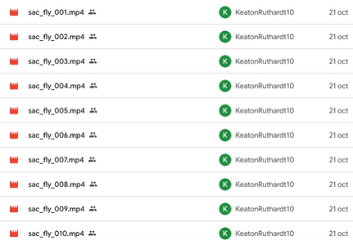

2 Week 1: Project Foundation and Technical Setup
2.1 Overview
Week 1 established the complete technical foundation for our AI baseball prediction system. The team focused on environment setup, data source identification, model analysis, and computer vision research. Each member took ownership of a critical component that would enable all future development.
Date: October 24, 2025
Instructor: Dr. Valderrama
2.2 Team Roles (Deliverable 1)
| Member | Primary Responsibility |
|---|---|
| Keaton | Collect initial video samples & set up GitHub |
| Joshua | Configure development environment for the team |
| Duoduo | Research MLB Film Room & data sources |
| Diego | Explore computer vision tools on footage |
| Samuel | Analyze existing model & feature extraction |
General Outcome: Established a complete technical foundation — environment, data source, and modeling strategy — to begin implementing detection, tracking, and prediction in Deliverable 2.
2.3 Individual Contributions
Keaton Ruthardt: Video & Repository Setup
Objective: Establish video dataset and collaboration infrastructure
Accomplishments:
1. Baseline Video Collection
- Collected initial sacrifice fly play videos
- Focused on high-quality MLB footage
- Ensured variety in camera angles and stadiums
- Established naming conventions

2. GitHub Repository Setup - Created shared repository for team collaboration
- Organized folder structure:
- Ensured consistent naming conventions
- Set up version control workflow
- Added
.gitignorefor large files
Impact:
- Team has centralized codebase
- Video samples ready for testing
- Consistent file organization
- Collaboration infrastructure established
Joshua Cano: OpenCV Setup & Environment Testing
Objective: Configure and validate development environment
What is OpenCV?
OpenCV (Open Source Computer Vision Library) allows computers to see and interpret images and videos.
Key Capabilities:
- Opening and reading video frames (
cv2.VideoCapture) - Processing images (resize, grayscale, blur, sharpen)
- Detecting edges and motion between frames
- Identifying players or objects using pretrained models
- Works in Python and C++, including headless mode for servers (like Titan)
Testing Process:
1. Installation
pip install opencv-python-headless2. Compatibility Testing - Confirmed compatibility with Titan server - Tested headless mode (no display required)
3. Test Script (opencv_test.py):
import cv2
# Test video loading
video_path = 'videos/sac_fly_001.mp4'
cap = cv2.VideoCapture(video_path)
if cap.isOpened():
print("OpenCV loaded successfully!")
# Get video metadata
width = int(cap.get(cv2.CAP_PROP_FRAME_WIDTH))
height = int(cap.get(cv2.CAP_PROP_FRAME_HEIGHT))
fps = cap.get(cv2.CAP_PROP_FPS)
frame_count = int(cap.get(cv2.CAP_PROP_FRAME_COUNT))
print(f"Resolution: {width}×{height}")
print(f"FPS: {fps}")
print(f"Total frames: {frame_count}")
# Save first frame
ret, frame = cap.read()
if ret:
cv2.imwrite('first_frame.jpg', frame)
print("First frame saved!")
cap.release()
print("Video file closed.")
else:
print("Error: Could not open video")Test Results:
Using sac_fly_001.mp4:
- ✅ Video opened successfully
- ✅ Resolution: 1280×720
- ✅ FPS: 59.94
- ✅ Total frames: 1,400
- ✅ First frame saved:
first_frame.jpg - ✅ Output: “OpenCV loaded successfully!”
Impact:
- Environment verified and ready for full frame-by-frame analysis
- Team can proceed with video processing
- Confirmed server compatibility for deployment
- Baseline test established for future work
Duoduo Cai: MLB Film Room Data Source Research
Objective: Identify reliable video and metadata sources
Research Findings:
MLB Film Room - Primary Source
Confirmed: MLB Film Room is the most reliable and comprehensive video library for MLB plays.
Key Data Available per Video:
Play Information:
- Teams (home/away)
- Match date
- Batters and pitchers
- Play result (SAFE/OUT)
Statcast Analytics:
- Exit velocity (MPH)
- Launch angle (degrees)
- Hit distance (feet)
- Video link and description
Metadata Collection Plan:
video_metadata = {
'play_id': 'unique_identifier',
'play_outcome': 'SAFE' or 'OUT',
'teams': 'Home vs Away',
'date': 'YYYY-MM-DD',
'batter': 'Player Name',
'pitcher': 'Player Name',
'exit_velocity': 109.8, # MPH
'launch_angle': 16, # degrees
'hit_distance': 305, # feet
'video_url': 'mlb_film_room_link'
}Extra Insight - Data Volume:
MLB’s partnership with Google Cloud produces:
- ~25 million datapoints per game
- Consistent and trustworthy analytics
- Perfect for AI training
Impact:
- Confirmed reliable data source
- Established metadata schema
- Identified key features for model
- Validated data quality and consistency
Samuel Bulnes: Existing Model Analysis
Objective: Understand baseline model and design feature extraction strategy
Model Architecture:
Ensemble Approach:
- Random Forest: Captures non-linear patterns
- Gradient Boosting: Sequential error correction
- Logistic Regression: Linear baseline
Performance Metrics:
- Log Loss: 0.37–0.38 (strong probability accuracy)
- Training Data: 15,533 sacrifice plays
- Features: 45 features from GPS tracking
- Data Source: Professional Statcast/GPS hardware
Why It Works Well:
- Multiple Algorithms: Ensemble combines strengths of different approaches
- Rich Data: Real MLB Statcast data (positions, ball flight, context)
- Large Dataset: 15,000+ labeled examples
- Feature Engineering: 45 carefully designed features
Limitations of Current Model:
- Expensive Hardware: Requires professional GPS tracking systems
- Not Real-Time: Designed for post-game analysis
- Limited Access: Only works in professional settings
- Hardware Dependent: Cannot work from video alone
Our Integration Challenge:
Extract these same features directly from video, no hardware required.
Feature Extraction Strategy
Top 10 Features (68.3% of predictive power):
runner_base(24.2%)hit_distance(20.3%)bearing(10.5%)launch_direction(6.9%)exit_speed(4.8%)launch_angle(1.9%)hangtime(2.1%)exit_speed_squared(2.9%)fielder_pos(2.3%)outfield_spread_event(2.5%)
Three-Method Approach:
Method 1: Computer Vision
- Detect and track players (YOLOv8)
- Identify fielder positions (LF/CF/RF)
- Calculate spatial relationships
# Player detection
players = yolo_model.detect(frame)
positions = assign_fielder_positions(players)
distances = calculate_outfield_spread(positions)Method 2: OCR Reading
- Extract Statcast overlays from video
- Read exit speed, launch angle, hangtime
- Parse text from screen graphics
# OCR extraction
overlay_text = pytesseract.image_to_string(frame)
exit_speed = parse_statcast_overlay(overlay_text, 'exit_velocity')Method 3: Calculated Features
- Compute derived values
bearing: Angle from home to catchexit_speed_squared: exit_speed²
# Calculate bearing
bearing = calculate_angle(home_plate, catch_location)
exit_speed_sq = exit_speed ** 2Challenges & Solutions:
| Challenge | Solution |
|---|---|
| Missing overlays | Use ball-trajectory physics |
| Player occlusion | Multi-frame tracking |
| Varying camera angles | Field-line calibration |
| Inconsistent lighting | Adaptive thresholding |
Diego Mendoza: Computer Vision Tools Research
Objective: Evaluate object detection frameworks for baseball analysis
Frameworks Researched:
1. CNNs (Convolutional Neural Networks)
- Type: Baseline for detection
- Strengths: Accurate feature extraction
- Weaknesses: Slower, more complex
- Use Case: Detailed analysis, training custom models
2. YOLO (You Only Look Once)
- Type: Real-time object tracking
- Strengths: Fast, single-pass detection
- Weaknesses: May miss small objects
- Use Case: ⭐ Best for real-time tracking
3. TensorFlow Object Detection API
- Type: Flexible detection framework
- Strengths: Customizable, well-documented
- Weaknesses: Complex setup
- Use Case: Post-game detailed analysis
Comparison Metrics:
| Framework | Speed (FPS) | Accuracy (mAP) | Complexity |
|---|---|---|---|
| YOLO | ⭐⭐⭐⭐⭐ | ⭐⭐⭐⭐ | ⭐⭐ |
| CNN | ⭐⭐ | ⭐⭐⭐⭐⭐ | ⭐⭐⭐⭐ |
| TensorFlow | ⭐⭐⭐ | ⭐⭐⭐⭐⭐ | ⭐⭐⭐⭐⭐ |
Testing Plan:
# Evaluate on baseball clips
test_video = 'sac_fly_001.mp4'
metrics = {
'mAP': 'Mean Average Precision',
'FPS': 'Frames Per Second',
'IoU': 'Intersection over Union'
}
# Test each framework
for framework in [YOLO, CNN, TensorFlow]:
results = evaluate(framework, test_video)
print(f"{framework}: {results}")Key Findings:
✅ YOLO: Top choice for real-time performance
✅ TensorFlow: Better for post-game analysis
✅ CNN: Best accuracy but slowest
Recommendation: Use YOLO for player tracking
2.4 Technical Achievements
1. Development Environment
- OpenCV installed and tested
- Video processing verified
- Server compatibility confirmed
- Baseline test script created
2. Data Infrastructure
- GitHub repository established
- Video samples collected
- Folder structure organized
- Version control configured
3. Data Source Validated
- MLB Film Room confirmed as primary source
- Metadata schema designed
- Statcast data availability verified
- 25M+ datapoints per game identified
4. Model Understanding
- Existing model analyzed
- Feature importance identified
- Integration strategy designed
- Challenges documented
5. Technology Selection
- Computer vision frameworks compared
- YOLO selected for tracking
- Testing plan established
- Performance metrics defined
2.5 Key Decisions
Technology Stack
Object Detection: YOLOv8
Machine Learning: scikit-learn (Random Forest + Gradient Boosting + Logistic Regression)
Data Source: MLB Film Room
Collaboration: GitHub
Feature Strategy
Focus on top 10 features (68.3% of predictive power) to: - Reduce complexity - Maintain performance - Enable video-based extraction
Development Approach
Phase 1: Computer Vision (detect & track)
Phase 2: Feature Extraction (calculate metrics)
Phase 3: Model Integration (predictions)
2.6 Challenges Identified
- Hardware to Software: Convert GPS-based features to video-based
- Real-time Processing: Maintain acceptable speed for tracking
- Camera Variance: Handle different angles and stadiums
- Missing Data: Deal with occluded players or missing overlays
- Feature Extraction: Calculate spatial metrics from 2D video
2.7 Next Steps (Week 2)
- Keaton: Implement YOLOv8 player detection
- Joshua: Build frame extraction pipeline
- Duoduo: Develop spatial mapping (pixels → feet)
- Diego: Create feature documentation
- Samuel: Begin feature reduction testing
2.8 Success Metrics
- ✅ Environment ready for development
- ✅ Data source identified and validated
- ✅ Model strategy documented
- ✅ Technology decisions made
- ✅ Team roles clearly defined
2.9 Lessons Learned
- Start with Testing: Validating OpenCV early prevented later issues
- Understand the Baseline: Analyzing existing model informed our approach
- Research Pays Off: Comparing frameworks saved time later
- Clear Roles Help: Each member owning a component accelerated progress
- Documentation Matters: Week 1 decisions guide all future work
Week 1 laid a solid foundation with clear technical direction, validated data sources, and a cohesive team strategy. Every subsequent week built directly on these initial decisions.